Contexte
L’objectif de cette mission est de commencer à exploiter la base de données de l’entreprise KDou pour pouvoir par la suite avoir des analyses et indicateurs pertinents. On souhaite faire des requêtes avec le logiciel Low Code Access.
Indicateur intéressant
La requête j, qui est décrit dans la suite, est une requête qui montre les couples de clients situés à Paris. Cet indicateur est utile pour l'objectif de responsabilité écologique de l'entreprise. En effet, cette requête peut permettre à l'entreprise d'optimiser ses livraisons. Identifier les clients proches permettrait de grouper les livraisons et donc de réduire non seulement les coûts de transports, mais aussi l'empreinte carbone de Kdou.
Questions avec leur réponse
Dans les réponses il y a l'interprétation, le code SQL et la requête Access ou un extrait de celle-ci.
Question a : Clients parisiens triés par société Une seule table. On filtre sur la ville, pas sur le code postal un client parisien a le code 76001
J'ai considéré comme parisien tout client dont la ville commence par Paris. Je n'ai pas filtré sur le code postal car l'un de ces clients a un code postal erroné
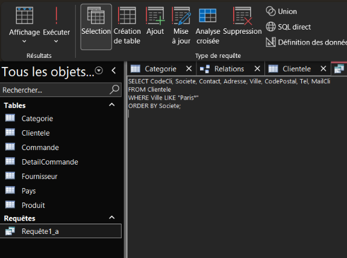
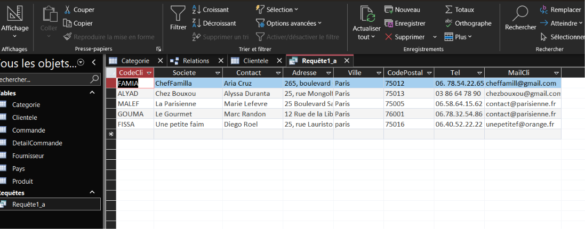
Question b : Produits américains à moins de 25 € Produit → Fournisseur → Pays pour l'origine, Categorie pour calculer le prix de vente
L'origine d'un produit est le pays de son fournisseur. Le « prix » pouvant désigner le coût d'achat ou le prix de vente, j'affiche les deux (prix de vente = coût × coefficient de marge de la catégorie). « Moins de 25 » est compris au sens strict.
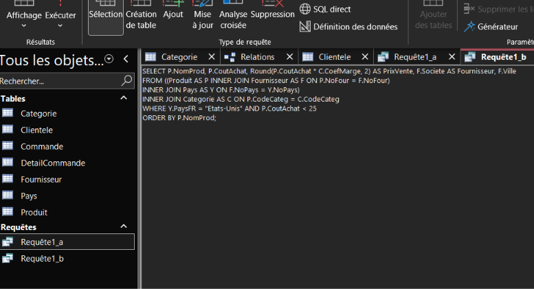
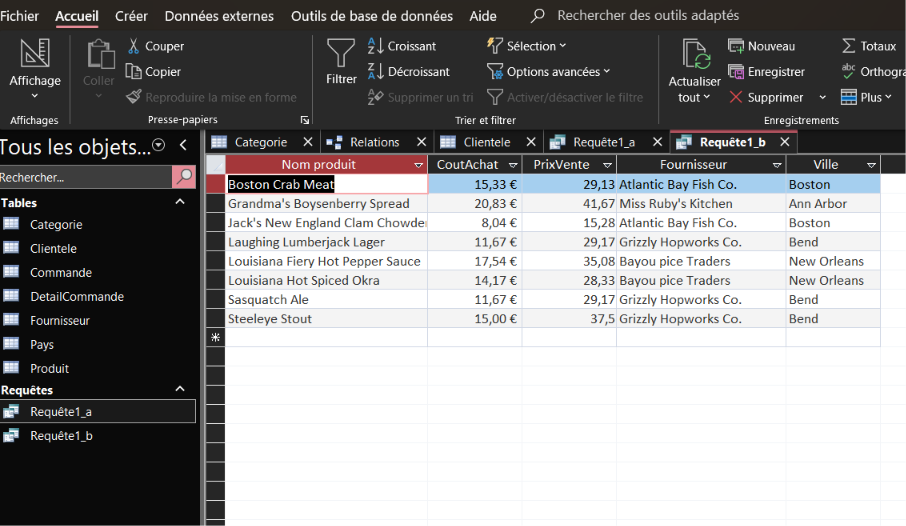
Question c : Viandes ou poissons à plus de 50 €
La catégorie « poissons » correspond à ‘Poissons et fruits de mer’. Les deux catégories sont gardées avec IN, le coût est strictement supérieur à 50.
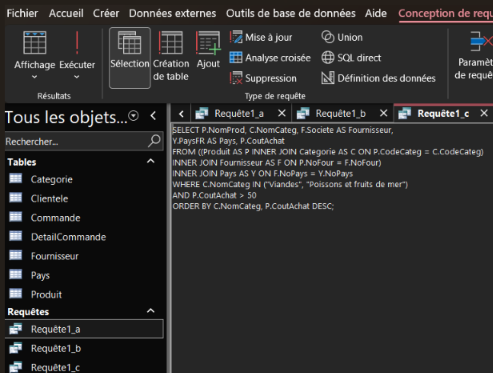
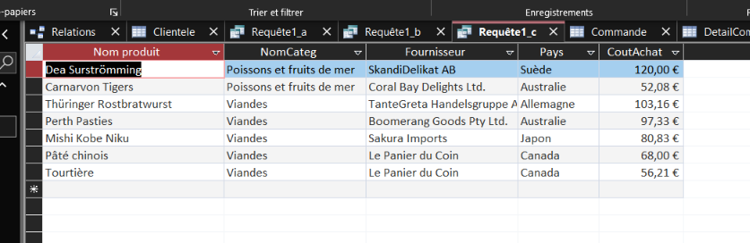
Question d : Quels sont les fournisseurs qui proposent de la viande ou du poisson ?
Dans cette requête on cherche les fournisseurs qui proposent de la viande ou du poisson. Elle peut permettre à Kdou de les identifier afin de mieux gérer les approvisionnements ou encore pour les comparer entre eux et choisir les plus intéressants.

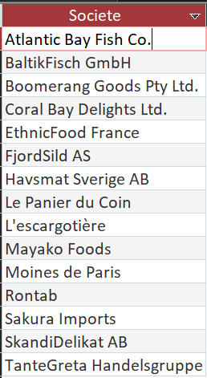
Question f : Quels sont les produits conditionnés dans du carton ou dans du verre ?
Cette requête informe sur quels produits sont emballés dans du carton ou du verre, ce qui pourrait permettre aux livreurs de mieux organiser leur camion, en plaçant les produits en verre au-dessus des autres pour éviter la casse.


Question g : Quelles sont les 3 dernières commandes du client Max Deschamps ?
Cette requête renvoie les 3 dernières commandes de Max Deschamps. Elle permet, par exemple, de retrouver rapidement les informations en cas de réclamation.
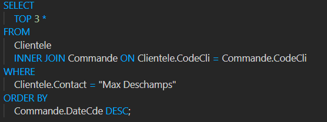
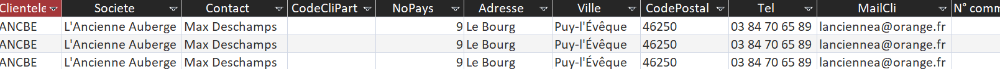
Question h : Fournisseurs qui ne proposent que des desserts
« Que des desserts » signifie : au moins un dessert et aucun produit d'une autre catégorie (le code de la catégorie Desserts est 3). Sans la première condition, les fournisseurs sans produit seraient aussi retournés.
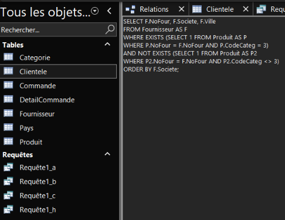
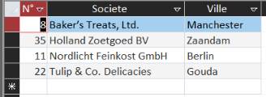
Question i : Fournisseurs hors France sans produit
Pays différent de France, et aucun produit rattaché. C'est la différence entre tous les fournisseurs étrangers et ceux qui ont au moins un produit
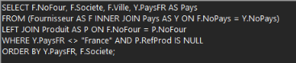
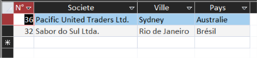
Question j : Couples de clients parisiens
Un couple est une paire de deux clients différents, l'ordre ne comptant pas. J'utilise une auto-jointure de Clientele avec deux alias et la condition C1.CodeCli < C2.CodeCli .
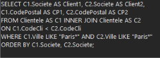
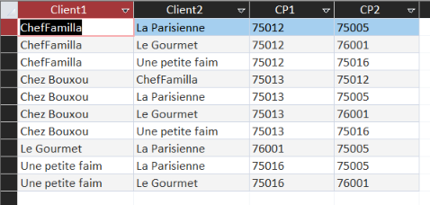
Indicateur 2 :
2 – CA total généré avec les fournisseurs de l'Union européenne On part des lignes de commande et on remonte jusqu'au pays du fournisseur. Pour chaque ligne : quantité × (1 − remise) × coût × coefficient. La fonction Sum additionne tout. Comme le résultat est une seule valeur, il n'y a ni GROUP BY ni autre colonne. La France est « Membre » : ses fournisseurs sont comptés. Les frais de port ne sont pas inclus
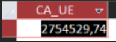
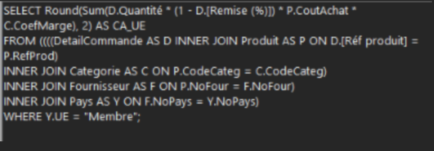
Indicateur 3 :
2 – CA annuel des desserts et des boissons Il faut un total par année et par catégorie : on regroupe donc sur ces deux colonnes ( Year(M.DateCde) pour l'année). Le SELECT ne contient que les colonnes du GROUP BY et la somme. Lecture prudente : la base démarre en juillet 2020 et ne compte que 5 commandes en 2022 ; seule 2021 est une année complète. Les boissons dominent (coefficient 2,5 contre 1,6 pour les desserts, et 35 produits contre 15)

Indicateur 4 :
2 – CA annuel des desserts et des boissons Il faut un total par année et par catégorie : on regroupe donc sur ces deux colonnes ( Year(M.DateCde) pour l'année). Le SELECT ne contient que les colonnes du GROUP BY et la somme. Lecture prudente : la base démarre en juillet 2020 et ne compte que 5 commandes en 2022 ; seule 2021 est une année complète. Les boissons dominent (coefficient 2,5 contre 1,6 pour les desserts, et 35 produits contre 15)